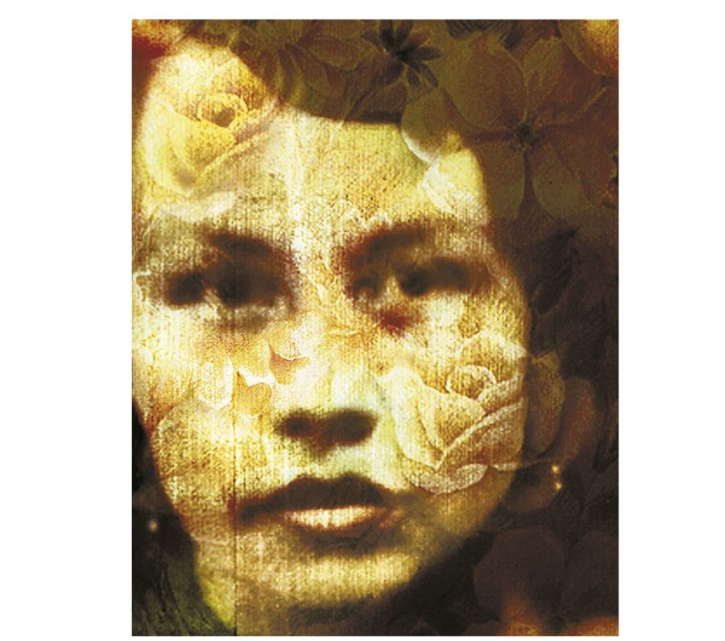
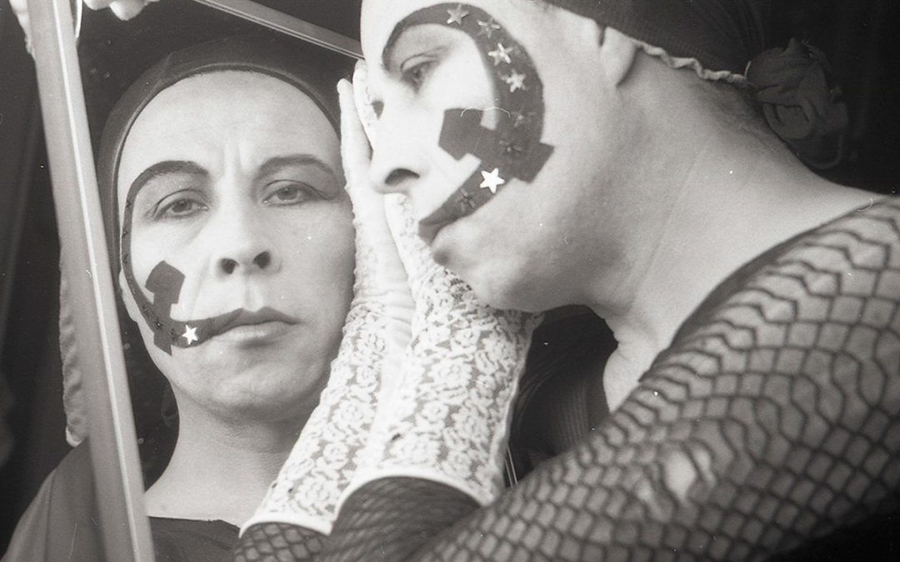
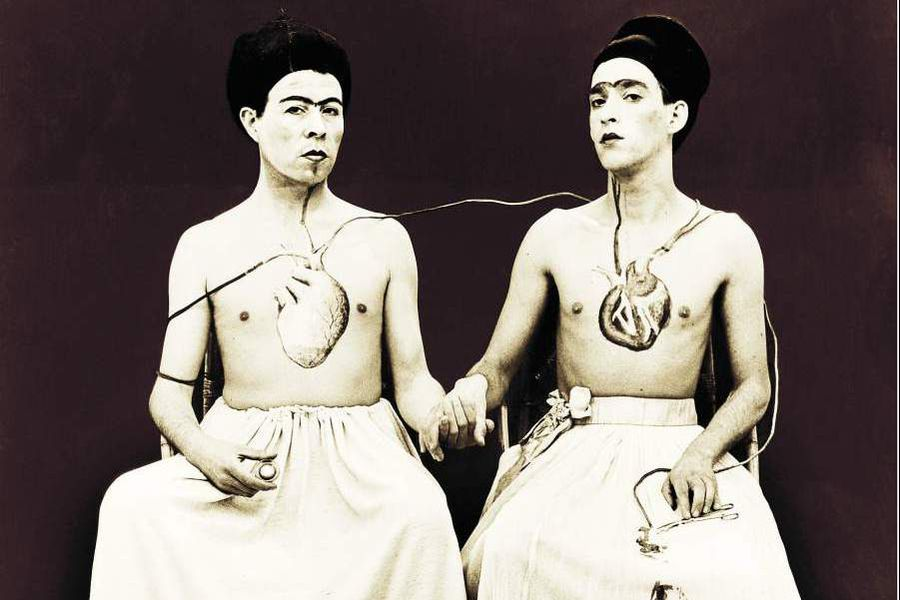
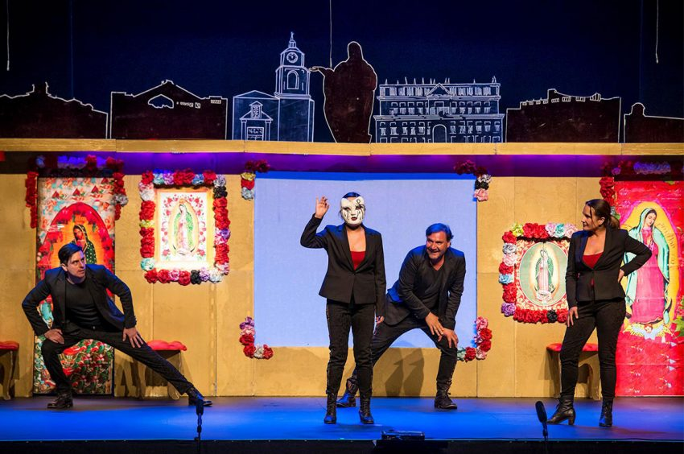
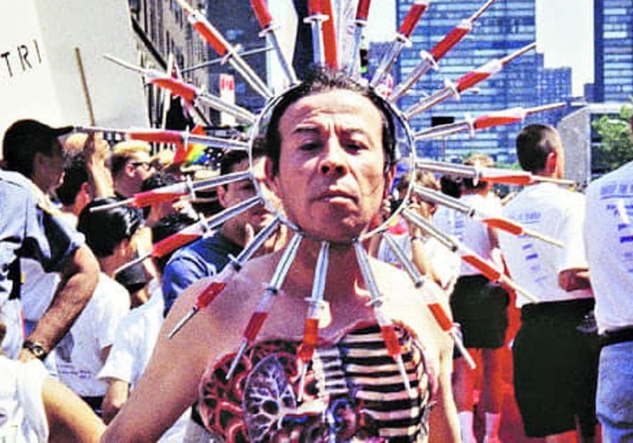

Crónicas
Resumenes de libros de Crónicas como: "Zanjón de la Aguada", "Adiós mariquita linda", "Loco afán: crónicas de sidario", "Háblame de amores", "Poco hombre", "Mi amiga Gladys" y "De perlas y cicatrices".
Leer masTengo Miedo Torero
Resumen de la unica novela del escritor. Historia de amor gay entre un homosexual de escasos recursos y un guerrillero de izquierda perteneciente al Frente Patriótico Manuel Rodríguez.
Leer mas

Antologías
Resumenes de libros como: "No tengo amigos, tengo amores", "Lemebel Oral", "A corazón abierto: geografía literaria de la homosexualidad en Chile" y "Antología de crónica latinoamericana actual".
Leer mas

Yeguas del Apocalipsis
Junto con Francisco Casas. Este dúo de corte performático se caracterizó por sabotear lanzamientos de libros y exposiciones de arte, apareciéndose de manera sorpresiva y provocadora.
Leer mas

Obra: La ciuidad sin ti
Dirección realizado por Claudia Pérez y Rodrigo Muñoz, sus temas centrales: “la discriminación a las minorías sexuales y a la diferencia, el arribismo, la lucha de clases, la identidad, el mundo y la estética homosexual.
Leer masDocumental: Lemebel
Dirigido por Joanna Reposi. Elogiado con las mejores críticas al momento de su estreno, retrata de manera muy íntima parte de la vida de quien fuera uno de los primeros activistas en exigir igualdad de derechos para las disidencias sexuales en Chile.
Leer mas
Película: Tengo miedo torero
Trata sobre romance entre La Loca del Frente (Alfredo Castro), una travesti vieja y Carlos (Leonardo Ortizgris), un joven guerrillero mexicano que pertenece al FPMR, quien llega a Chile para participar en el atentado que el dictador Agusto Pinochet sufrió en 1986.
Leer mas

Galeria de Fotos
Fotos del escritor, cronista y artista plástico. Desde sus inicios en Las Yeguas del Apocalisis, sus performances, amigos, fotos de su intimidad, obras y otros.
Ver mas